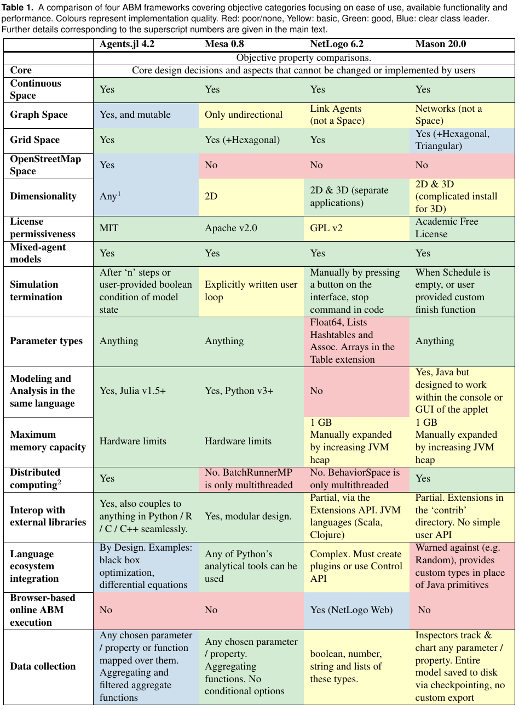
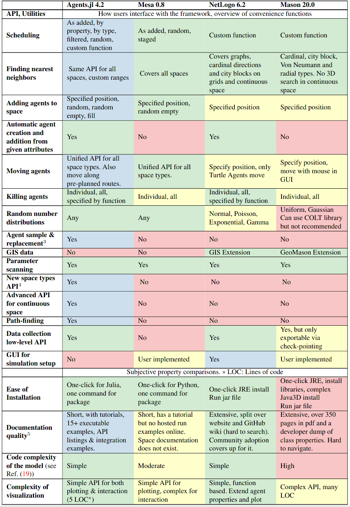

ABM Framework Comparison
Many agent-based modeling frameworks have been constructed to ease the process of building and analyzing ABMs (see here for a review). Notable examples are NetLogo, Repast, MASON, and Mesa.
In the ABMFrameworkComparisons repository we compare Agents.jl with many other popular alternatives, to assess where Agents.jl excels and also may need some future improvement.
The results are characterised in two ways: how long it took each model to perform the same scenario (initial conditions, grid size, run length etc. are the same across all frameworks), and how many lines of code (LOC) it took to describe each model and its dynamics. We use this result as a metric to represent the complexity of learning and working with a framework.
Time taken is presented in normalised units, measured against the runtime of Agents.jl. In other words: the results can only vary slightly from the ones presented here with a different hardware.
For LOC, we use the following convention: code is formatted using standard practices & linting for the associated language. Documentation strings and in-line comments (residing on lines of their own) are discarded, as well as any benchmark infrastructure. NetLogo is assigned two values since its files have a code base section and an encoding of the GUI. Since many parameters live in the GUI, we must take this into account. Thus 375 (785) in a NetLogo count means 375 lines in the code section, 785 lines total in the file. An additional complication to this value in NetLogo is that it stores plotting information (colours, shapes, sizes) as agent properties, and as such the number outside of the bracket may be slightly inflated.
The latest results are available at the README.md of the ABMFrameworkComparisons repository, where you can also find inside each model subfolder a DECLARATION.md file with the details on the parameters used for each comparison.
In the majority of cases, Agents.jl's performance is exceptional whilst using the least amount of code. This removes many frustrating barriers-to-entry for new users, and streamlines the development process for established ones.
Table-based comparison
In our paper discussing Agents.jl, we compiled a comparison over a large list of features and metrics from the four frameworks discussed above. They are shown below in a table-based format:
 